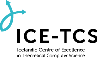

Open Problems in the Equational Logic of Processes
Icelandic Research Fund Project nr. 196050-051 (2019-2023)
Status: Completed
The overarching goal of this project is to solve some of the
challenging open problems in the equational axiomatization of
behavioural equivalences over process calculi. In particular, the
project aims at
- obtaining complete equational axiomatizations of
various notions of bisimilarity over terms (possibly including
variables) in the recursion-free fragment of Milner's Calculus of
Communicating Systems (CCS), using suitable auxiliary operators,
- extending classic nonfinite axiomatizability results for strong
bisimilarity over CCS to the setting of equivalences abstracting
from internal steps in computations, and
- developing general techniques
for transferring positive and negative results on the existence of
finite equational axiomatizations of process equivalences between
languages and between versions of behavioural equivalences that differ
in their treatment of internal steps in process behaviours.
Despite over thirty years of work in the field of algebraic process
theory, those problems have not been completely solved in the
literature. Thus, the results obtained within this project will lead
to an improved understanding of the power of the classic logic of
equations in describing and reasoning about a ubiquitous class of
computing systems, and will have impact on future work on algebraic
methods in concurrency theory. Moreover, the techniques used to
achieve them will expand the toolbox of the working concurrency
theorist and will be applied to specific, unsolved axiomatic questions
that are within the scope of the project. The axiomatizations obtained
within the project may also be applied in the computer-assisted
analysis of concurrent systems using theorem-proving technology. Last,
but not least, apart from the intrinsic scientific interest of the
proposed work, building on the successful
Polymath experience, the
project will be the first one in concurrency theory (and perhaps in
computer science as a whole) that uses large-scale on-line
collaboration to solve problems in that field, thus providing a
blueprint for future research cooperation.
Researchers
The research team includes Luca Aceto (PI, Reykjavik University and
Gran Sasso Science Institute), Elli Anastasiadi (PhD student at
Reykjavik University), Valentina Castiglioni (postdoctoral researcher
at Reykjavik University, from the 15th of May 2019), Clemens Grabmayer
(Gran Sasso Science Institute), Anna Ingolfsdottir (co-PI, Reykjavik
University), Bas Luttik (co-proposer, TU Eindhoven, NL), Mathias
Ruggaard Pedersen (postdoctoral researcher at Reykjavik University,
1 May 2019-20 May 2020), and Alexandra Silva (co-proposer,
University College London, UK).
Project-related key events and news
- 14 June 2023: Sanjit A. Seshia (UC Berkeley, USA) visits and delivers a seminar entitled "Design Automation for Verified AI-Based Autonomy" at 11 AM in room M103 at Reykjavik University. See here for details.
- 23 May 2023: ICE-TCS organises a workshop on formal methods for secure systems. Speakers include Musard Balliu (KTH), Rosario Giustolisi (ITU Copenhagen), Roberto Guanciale (KTH), Sebastian Mödersheim (DTU) and Stephen D. Wolthusen (Royal Holloway and NTNU). More details are available here.
- 18-31 May 2023: Mohammad Reza Mousavi (King's College London, UK) will visit ICE-TCS. Mohammad will deliver two ICE-TCS seminars: one on May 26 entitled "Establishing Trust in Connected and Autonomous Systems through Conformance Testing", and one on May 30 entitled "Automata Learning for Evolving and Concurrent Systems".
Further details avaliable on the seminars webpage.
- 19 May 2023: Marta Kwiatkowska (University of Oxford, UK) will visit and deliver a talk entitled "Safety and robustness for deep learning with provable guarantees".
- 21-25 November 2022: Valentina Castiglioni visits our collaborators at Eindhoven University of Technology. On November 24, she will deliver the talk "Uncertainties, adaptability, and verification" at the FSA Colloquium.
- 2 September 2022: Luca Aceto delivered an invited talk entitled "The importance of being negative: Non-finite axiomatisability results in process algebra" at International Conference on Applied Proof Theory 2022 (APT22).
- 10 August 2022: In a data- and graph-mining analysis presented here, Luca Aceto has been identified amongst the ten most influential authors in the CONCUR conference series according to two measures of centrality.
- 21 November 2021: Luca Aceto delivered a talk entitled "Introducing Formal Methods to First-Year Students in Three Intensive
Weeks" at FMTea 2021. [Video]
- 2 July 2021: Luca Aceto delivered a keynote address entitled "In search of lost time:
Axiomatising parallel composition in process algebras" at the 36th ACM/IEEE Annual Symposium on Logic in Computer Science (LICS 2021). [Video]
- 12-16 August 2019:
Bas Luttik (TU Eindhoven)
visits ICE-TCS.
- 12-15 August 2019:
Jurriaan Rot (Radboud University
Nijmegen and University College London) and
Tobias
Kappé (University College London) visit ICE-TCS.
Publications
Accepted and published papers
Journal papers
-
L. Aceto, A. Achilleos, E. Anastasiadi and A. Ingolfsdottir.
Axiomatizing recursion-free, regular monitors.
Journal of Logical and Algebraic Methods in Programming Volume 127, June 2022, 100778.
[Official publisher version (DOI)]
-
L. Aceto, V. Castiglioni, W. Fokkink, A. Ingolfsdottir and B. Luttik.
Are Two Binary Operators Necessary to Obtain a Finite Axiomatisation of Parallel Composition?
.
ACM Transactions on Computational Logic, 2022.
[Official publisher version (DOI)]
-
L. Aceto, V. Castiglioni, A. Ingolfsdottir, B. Luttik and M. R. Pedersen.
On the axiomatisability of parallel composition
.
Logical Methods in Computer Science 18(1), 2022.
[Official publisher version (DOI)]
-
L. Aceto, E. Anastasiadi, V. Castiglioni, A. Ingolfsdottir, B. Luttik and M. R. Pedersen.
On the axiomatisability of priority III: Priority strikes again
.
Theoretical Computer Science 837:223-246, 2020.
[Official publisher version (DOI)]
-
V. Castiglioni, K. Chatzikokolakis and C. Palamidessi.
Logical Characterization of Differential Privacy.
Science of Computer Programming 188, 2020.
[Official publisher version (DOI)]
-
V. Castiglioni, M. Loreti and S. Tini.
The Metric Linear Time - Branching Time Spectrum on Nondeterministic Probabilistic Processes.
Theoretical Computer Science 813: 20-69, 2020.
[Official publisher version (DOI)]
-
V. Castiglioni, M. Loreti and S. Tini.
A framework to measure the robustness of programs in the unpredictable environment. Logical Methods for Computer Science, 2023. To appear.
-
V. Castiglioni and S. Tini.
Probabilistic Divide and Congruence: Branching Bismilarity.
Theoretical Computer Science 802: 147-196, 2020.
[Official publisher version (DOI)]
-
V. Castiglioni and S. Tini.
Raiders of the Lost Equivalence: Probabilistic Branching Bismilarity.
Information Processing Letters 159-160: 105947, 2020.
[Official publisher version (DOI)]
- L. Aceto, I. Fabregas, C. Gregorio-Rodriguez and A. Ingolfsdottir.
Logical characterisations and compositionality of input-output conformance
simulation.
Journal of Logical and Algebraic Methods in Programming 106:78-106, Elsevier, August 2019.
[Official publisher version (DOI)]
Conference and workshop papers
-
L. Aceto and A. Achilleos and E. Anastasiadi and A. Francalanza.
Monitoring Hyperproperties with Circuits.
Proceedings of FORTE 2022,
Lecture Notes in Computer Science 13273, pp. 1-10, 2022.
[Official publisher version (DOI)]
-
L. Aceto, A. Achilleos, E. Anastasiadi, A. Francalanza and A. Ingolfsdottir.
Complexity through Translations for Modal Logic with Recursion.
Proceedings of GandALF 2022,
EPTCS 370, pp. 34-48, 2022.
[Official publisher version (DOI)]
-
L. Aceto, E. Anastasiadi, V. Castiglioni, A. Ingolfsdottir and B. Luttik.
In search of lost time: Axiomatising parallel composition in process algebras.
Proceedings of LICS 2021 (invited paper),
IEEE, pp. 1-14, 2021.
[Official publisher version (DOI)]
-
L. Aceto, E. Anastasiadi, V. Castiglioni, A. Ingolfsdottir and M. R. Pedersen.
On the axiomatizability of priority III: The return of sequential
composition.
Proceedings of ICTCS 2019, the 20th Italian Conference on Theoretical Computer Science,
CEUR Workshop Proceedings 2504: 145-157, September 2019.
-
L. Aceto, E. Anastasiadi and A. Ingolfsdottir.
An axiomatisation of verdict equivalence over regular monitors.
Selected for presentation at the 12th Panhellenic
Logic Symposium, Anogeia, Crete, Greece, 26-30 June 2019.
-
L. Aceto, J. C. M. Baeten, P. Bouyer-Decitre, H. Hermanns, A. Silva.
CONCUR Test-Of-Time Award 2020 Announcement (Invited Paper).
Proceedings of CONCUR 2020,
LIPIcs 171, pp. 5:1-5:3, 2020.
-
L. Aceto, V. Castiglioni, W. Fokkink, A. Ingolfsdottir and B. Luttik.
Are Two Binary Operators Necessary to Finitely Axiomatise Parallel Composition?.
Proceedings of CSL 2021,
LIPIcs 183, 8:1-8:17, 2021.
[Official publisher version (DOI)]
-
L. Aceto, V. Castiglioni, A. Ingolfsdottir and B. Luttik.
On the Axiomatisation of Branching Bisimulation Congruence over CCS.
Proceedings of CONCUR 2022,
LIPIcs 243, pp. 6:1-6:18, 2022.
[Official publisher version (DOI)]
-
L. Aceto, V. Castiglioni, A. Ingolfsdottir, B. Luttik and M. R. Pedersen.
On the Axiomatisability of Parallel Composition: A Journey in the Spectrum.
Proceedings of CONCUR 2020,
LIPIcs 171, pp. 18:1-18:22, 2020.
[Official publisher version (DOI)]
-
L. Aceto and A. Ingolfsdottir.
Introducing Formal Methods to First-Year Students in Three Intensive Weeks.
Proceedings of FMTea 2021,
Lecture Notes in Computer Science 13122, pp. 1-17, 2021.
[Official publisher version (DOI)]
- Antonis Achilleos and Aggeliki Chalki. Counting Computations with Formulae: Logical Characterisations of Counting Complexity Classes. To appear in the Proceedings of the 48th International Symposium on
Mathematical Foundations of Computer Science (MFCS 2023), LIPIcs, August 2023.
-
V. Castiglioni, M. Loreti and S. Tini.
How Adaptive and Reliable is Your Program?
Proceedings of FORTE 2021,
Lecture Notes in Computer Science 12719, pp. 60-79, 2021.
[Official publisher version (DOI)]
-
V. Castiglioni, M. Loreti and S. Tini.
Measuring Adaptability and Reliability of Large Scale Systems
.
Proceedings of ISoLA 2020, part 2,
Lecture Notes in Computer Science 12477, pp. 380-396, 2020.
[Official publisher version (DOI)]
Book chapters
-
L. Aceto, A. Achilleos, E. Anastasiadi, A. Francalanza, A. Ingolfsdottir, K. Lehtinen and M. R. Pedersen.
On Probabilistic Monitorability.
In J. Raskin, K. Chatterjee, L. Doyen and R. Majumdar (eds)
Principles of Systems Design - Essays Dedicated to Thomas A. Henzinger on the Occasion of His 60th Birthday
Lecture Notes in Computer Science 13660, pp. 325-342, 2022.
[Official publisher version (DOI)]
-
L. Aceto, E. Anastasiadi, V. Castiglioni and A. Ingolfsdottir.
Non-finite Axiomatisability Results via Reductions: CSP Parallel Composition and CCS Restriction.
In N. Jansen, M. Stoelinga and P. van den Bos (eds)
A Journey from Process Algebra via Timed Automata to Model Learning - Essays Dedicated to Frits Vaandrager on the Occasion of His 60th Birthday.
Lecture Notes in Computer Science 13560, pp. 1-26, 2022.
[Official publisher version (DOI)]
-
V. Castiglioni, R. Lanotte and S. Tini.
Fully Syntactic Uniform Continuity Formats for Bisimulation Metrics.
In M. Alvim, K. Chatzikokolakis, C. Olarte and F. Valencia (eds)
The Art of Modelling Computational Systems:
A Journey from Logic and Concurrency to Security and Privacy:
Essays Dedicated to Catuscia Palamidessi on the Occasion of Her 60th Birthday.
Lecture Notes in Computer Science, 2019.
[Official publisher version (DOI)]
PhD theses
- Elli Anastasiadi. Syntactic approaches to negative results in
process algebras and modal logics. PhD Dissertation, Department of Computer Science, Reykjavik University, 17 October 2022. (The thesis was defended on Tuesday, 27 September 2022.)
Submitted papers
-
L. Aceto, A. Achilleos, E. Anastasiadi, A. Francalanza and A. Ingolfsdottir.
Complexity results for modal logic with recursion via translations and tableaux. Submitted for journal publication.
-
L. Aceto, A. Achilleos, A. Chalki and A. Ingolfsdottir.
The complexity of deciding characteristic formulae in van Glabbeek’s branching-time spectrum. Submitted as a short abstract to a workshop.
- L. Aceto, V. Castiglioni, A. Ingolfsdottir and B. Luttik.
Non Finite Axiomatisability of Weak Bisimulation-Based Congruences. Submitted for journal publication.
- L. Aceto, V. Castiglioni, A. Ingolfsdottir and B. Luttik.
Axiomatising Weak Bisimulation Congruences over CCS with Left Merge
and Communication Merge. Submitted for journal publication.